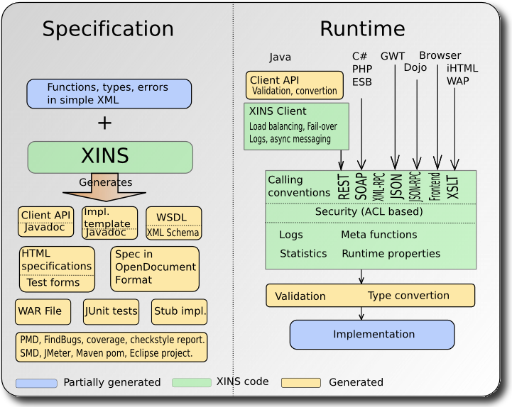

Overview
XINS is an open-source Web Services framework supporting HTTP protocols such as REST, SOAP, XML-RPC, JSON, JSON-RPC and more.
From the specifications written in simple XML, XINS generates the Client API (.jar), the Java server code template (.war), the WSDL and the documentation of the specification in HTML (with the test forms) or in OpenDocument format. Examples can be included in the specification and can be used to generate a server stub, a client mock, JUnit tests or JMeter tests.
For more information read the user guide and have a look at the demonstration page or at the features page.

News
XINS 3.1 released [February 22, 2013]
What's new:- Added support for caching of the result.
- Added possibility to return not modified with no data.
- Improved performance.
- Added JSON-RPC 2.0 calling convention.
- Added the result codes: _FunctionNotSpecified, _FunctionNotFound, _InvalidRequestFormat, _NotAllowed, _DisabledAPI
- Added possibility to handle compressed (gzip) result data.
- Added example with jQuery.
- Various bug fixes
XINS 3.1 is not backward compatible with XINS 2.3, read the migration 2.3 to 3.0 article
Technical details are available in the Change Log file.
Download this release, either as a Windows installer or as a platform-independent TAR GZ file.